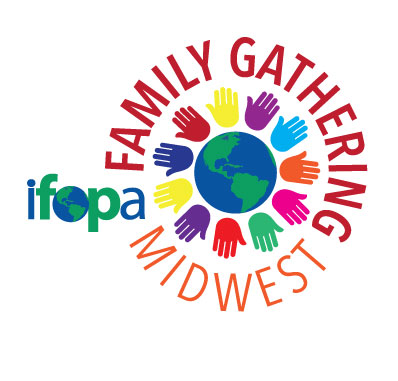

Community Resources
Part 4
The pure infrequency of FOP makes finding help much more difficult than other more familiarized conditions. However, the aforementioned International Fibrodysplasia ossificans progressiva Association speeds up the process of finding recent information and helpful guides to dealing with FOP. The organization hosts events to become more knowledgeable and as well donates $500,000 annually towards research of the disease. This organization’s dedication to helping those with FOP is admirable and is a great tool to comfort those that are worried about life changes like this. The Midwest Family Gathering hosted by ifopa is an event in St. Louis that provides new information to families and researchers. This event is both an example of the assistance provided by ifopa but as well serves as an opportunity for our family to learn more about the condition.